AgileX PIKA
데이터 수집 시스템
AgileX 공식 자료를 한국어로 옮긴 설명서입니다. 구성과 사양, 안전 수칙, 모듈별 각 부분과 표시등부터 ROS2 소프트웨어 환경 구성, 기지국 설치와 위치 교정, 본체 없는 수집 · 로봇팔 원격조작 · Gripper 사용 흐름, 유지 보수와 문제 해결까지 다룹니다.
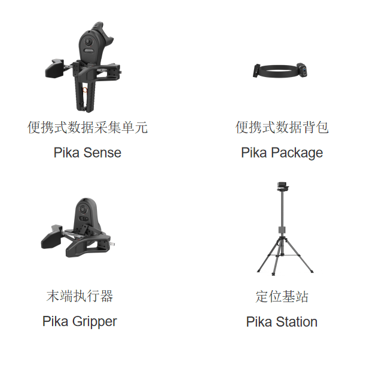
이 설명서에 대하여
| 로봇 | AgileX PIKA 데이터 수집 시스템 (Pika Sense · Pika Gripper · Pika Station · Pika Ego · Tracker) |
| 근거 문서 | AgileX Pika 用户手册 (Pika 产品使用手册（CN）ROS2) (agilexsupport.yuque.com peoot3/zozsdvvgvgha4zgd, 2026-09-08 판, AgileX 자료 목록의 ROS2 사용 설명서) · 같은 설명서의 대외판 【对外】Pika 产品用户手册 beta（CN）ROS2 (vm7e26ho2hmuw0ng, 2026-11-09, Tracker 표시등이 꺼졌을 때도 충전하라는 안내가 더해짐) · AgileX Pika 产品数据手册 beta（CN） (2026-10-12, 사양 · 구성품 · 모듈 소개) · AgileX PIKA 产品使用资料清单 (자료 목록, 부록 D) |
| 소프트웨어 | Ubuntu 22.04 · ROS 2 Humble · github.com/agilexrobotics/pika_ros (ros2 브랜치) |
| 판 | 한국어판 · 2026.11.17 |
| 문의 | go.support@wego-robotics.com |
사용 설명서(ROS2)와 데이터 시트(beta)의 내용이 다른 곳은 더 새로운 사용 설명서를 따랐습니다. 특히 Pika Sense와 Tracker의 표시등은 부록 C를 보십시오. AgileX 사용 설명서는 세부 절차를 AgileX 지식 베이스의 다른 문서에 맡기므로, 이 책도 그 문서의 이름과 주소를 그대로 적었습니다.
© WeGo Robotics. AgileX, PIKA는 AgileX Robotics의 상표입니다. 그림은 AgileX 사용 설명서와 데이터 시트에서 가져왔습니다.
목차
- 01제품 소개
- 02중요 안전 수칙
- 03사양
- 04모듈 소개
- 05빠른 시작
- 06소프트웨어 환경 구성
- 07하드웨어 준비
- 08사용 흐름
- 09유지 보수와 문제 해결
- 부록치수 도면 · 권장 구성 · 상태 표시등 · 자료 목록
제품 소개
Pika는 AgileX Robotics의 로봇 데이터 수집 · 원격조작 시스템입니다. 체화 지능(embodied AI) 분야의 공간 데이터 수집 제품으로, 범용 조작을 위한 가볍고 휴대하기 쉬운 수집 · 실행 일체형 솔루션입니다. 문서
Pika는 공간 정보를 밀리미터 수준으로 수집합니다. 6자유도 공간 위치 · 깊이 · 초광각 영상 · 그리퍼 개폐 정보를 함께 담아, 여러 정보를 융합해야 하는 체화 지능 데이터 수집에 알맞습니다. 실행기(Pika Gripper)는 Pika Sense로 수집한 데이터로 학습한 모델을 실행하는 끝단으로 쓸 수 있습니다.
구성 문서
| 부품 | 역할 | 필수 여부 |
|---|---|---|
| Pika Station | 위치 기지국입니다. 작업 공간에 설치해 수집기에 공간 위치를 제공합니다. | 필수 |
| Pika Sense | 손에 드는 데이터 수집기입니다. 끝단 자세와 영상 데이터를 수집합니다. | 필수 |
| Pika Gripper | 두 손가락 그리퍼입니다. 모델 추론 실행이나 원격조작 실행에 씁니다. | 선택 |
| Pika Ego | 머리에 쓰는 1인칭 시점 카메라입니다. | 선택 |
| Tracker | 공간 위치 추적 모듈입니다. Pika Sense(또는 Ego 카메라)에 달아 기지국 신호를 받아 6D 자세를 계산합니다. | 위치 기능을 쓸 때 필수 (Sense에 기본 포함, Ego 카메라는 선택) |
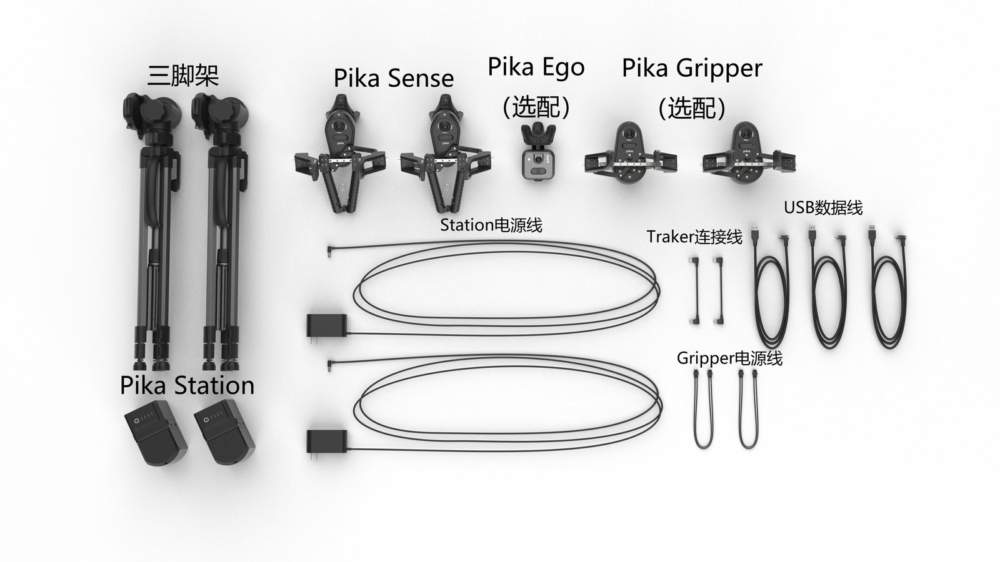
특징 문서
- 가벼운 손잡이: UMI보다 가볍습니다.
- 높은 위치 정밀도: 공간 정밀도가 최대 1.5 mm입니다. 벽 · 책상처럼 무늬가 적은 환경에서도 위치를 잃지 않습니다.
- 풍부한 센서: 화각이 약 200°인 어안 카메라로 두 손잡이가 서로를 볼 수 있어 양팔 작업에 크게 도움이 됩니다. 스테레오 깊이 카메라로 정밀한 깊이 데이터를, 고정밀 엔코더로 그리퍼 개폐 정보를 수집합니다.
- 완전한 실행기: 수집 끝단과 실행 끝단의 센서 구성이 같아 모델 알고리즘을 재현하기 쉽습니다.
- 위치 정보 직접 출력: 데이터를 후처리하거나 나중에 동기화할 필요가 없어 데이터 품질이 높고 수집이 빠릅니다.
- 편한 사용: 사람-기계 상호 작용을 고려한 설계로 오래 작업해도 덜 피곤합니다.
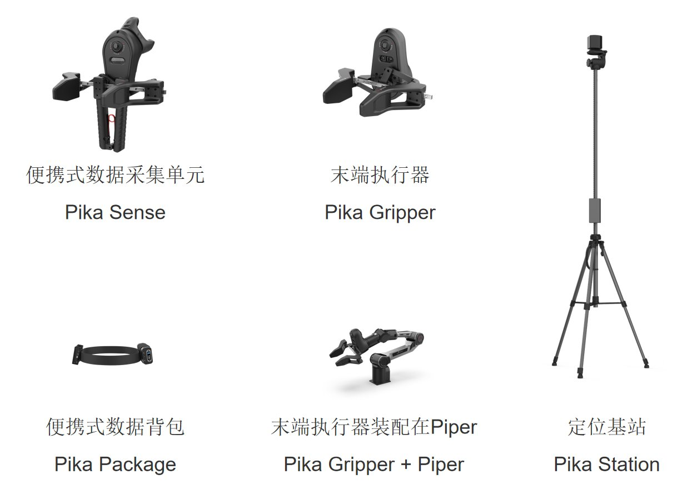
구성품 문서
| 제품 | 품목 | 수량 |
|---|---|---|
| Pika Station | 삼각대 | 1 |
| 위치 기지국 | 1 | |
| 배터리 | 1 | |
| 전원 어댑터 | 1 | |
| Pika Sense | 손잡이 단말 | 1 |
| USB 수신기 | 1 | |
| USB – Type-C 케이블 2 m | 1 | |
| Pika Gripper | Gripper 단말 | 1 |
| XT30 전원선 0.35 m | 1 | |
| USB – Type-C 케이블 2 m | 1 |
세 가지 사용 방법 문서
- 손으로 들고 수집: Pika Sense와 Pika Station만으로 손에 들고 데이터를 수집합니다.
- Gripper로 추론 실행: Pika Gripper를 단독 그리퍼로 써서 모델 추론을 실행합니다.
- 원격조작 수집: Pika Sense · Pika Station으로 로봇팔(PiPER 등 임의의 로봇팔)을 원격조작하며 수집합니다.
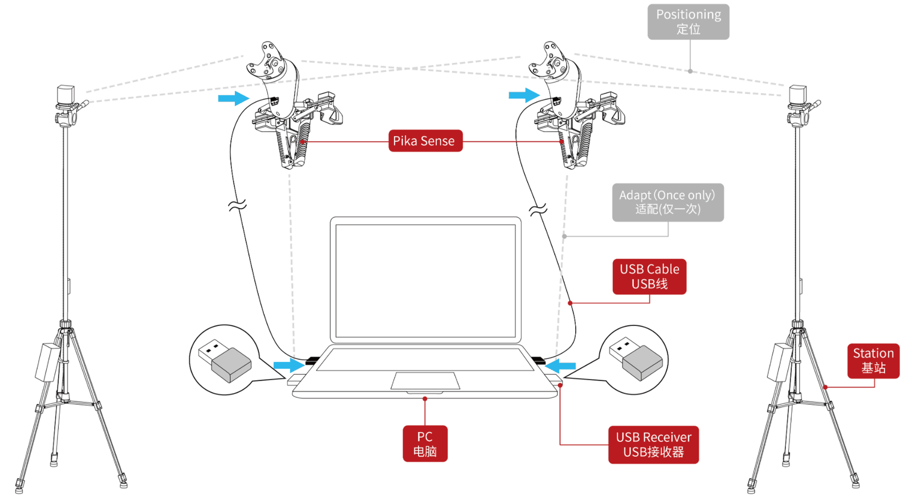
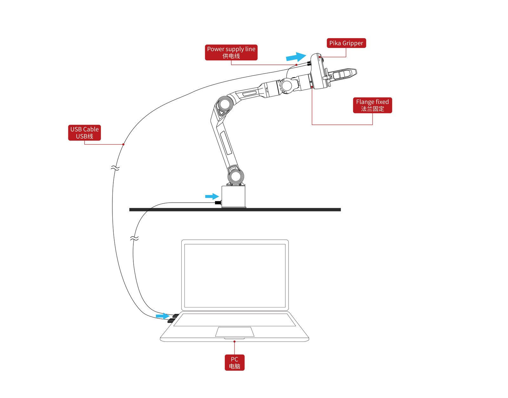
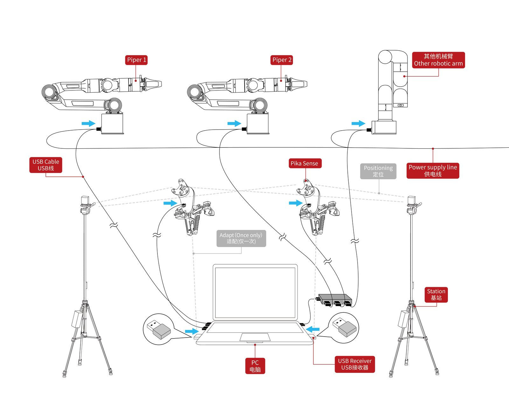
중요 안전 수칙
장치를 쓰기 전(특히 처음 전원을 넣기 전)에 이 장 전체를 읽고 이해한 뒤, 이 설명서의 조립 · 조작 지침을 모두 엄격히 따르십시오. 문서
⚠ 표시는 피하지 않으면 인명 피해 · 재산 피해 · 심각한 장비 손상으로 이어질 수 있는 위험한 상황을 뜻합니다.
면책과 책임의 한계
- Pika 장치가 어떤 방식으로든 손상 · 변경 · 개조되었으면 AgileX는 책임지지 않습니다.
- 프로그램 오류나 조작 실수로 장치나 다른 장비에 생긴 손상에 AgileX는 책임지지 않습니다.
장치를 쓰기 시작하면 이 사용 설명서와 안전 정보의 모든 조건과 내용을 읽고 이해하고 받아들인 것으로 봅니다. 사용자는 자신의 행동과 그로 인한 모든 결과에 책임을 지며, 장치를 정당한 목적으로만 쓰고 이 조건과 AgileX가 정하는 관련 정책 · 지침에 동의합니다. Pika 장치를 쓰는 동안에는 사용 설명서와 안전 정보의 요구 사항을 엄격히 지키십시오. 사용 지침을 어기거나 피할 수 없는 요인으로 생긴 인명 피해 · 사고 · 재산 피해 · 법적 분쟁 · 이해 충돌에 AgileX는 책임지지 않습니다.
Pika 장치는 만 18세 미만이거나 완전한 행위 능력이 없는 사람이 쓰기에 적합하지 않습니다. 이런 사람이 제품에 접근하지 못하게 하고, 이들이 있는 곳에서 조작할 때는 더욱 주의하십시오.
통합 업체와 최종 고객의 책임
Pika 장치의 통합 업체와 최종 고객은 관련 규정과 법을 지키고, 데이터 수집 응용 시스템 전체에 중대한 위험이 없도록 할 책임이 있습니다. 이 책임에는 다음 항목이 포함되며, 이에 한정되지 않습니다.
- 데이터 수집 시스템 전체의 위험성 평가를 합니다.
- 위험성 평가에서 정한, 다른 기계의 추가 안전장치를 함께 연결합니다.
- 소프트웨어와 하드웨어를 포함한 데이터 수집 시스템 전체의 설계 · 설치가 정확한지 확인합니다.
- 장치 관련 기능의 안전성을 평가하여, 개발한 데이터 수집 시스템이 실제 응용에서 중대한 위험이나 안전 문제가 없도록 합니다.
- 장치를 조작하기 전에 잠재적인 안전 위험을 알아 둡니다.
- 사용자가 어떤 안전 조치도 바꾸지 않게 합니다.
사용 환경
- 처음 쓰기 전에 이 설명서를 꼼꼼히 읽고 기본 조작과 규칙을 이해하십시오.
- 비교적 트인 곳에서 쓰십시오. Pika 장치에는 자동 장애물 회피 센서가 없습니다.
- 주위 온도가 0 ~ 40 °C인 곳에서 쓰십시오.
- 방수 · 방진 등급은 IP22입니다. 이 등급에 맞는 환경에서 쓰십시오.
사용 전 점검
- 장치에 눈에 띄는 이상이 없는지 확인하십시오.
- 배선이 제대로 연결되어 있는지 확인하십시오.
조작 주의 사항
- 조작할 때는 주변을 비교적 넓게 비워 두십시오.
- 장치가 보이는 곳에서 조작하십시오.
- 이상이 생기면 2차 손상을 막기 위해 즉시 사용을 멈추십시오.
- 이상이 생기면 기술 담당자에게 연락하고, 직접 고치지 마십시오.
사용 경고 ⚠
- Pika 장치와 공구 · 엔드 이펙터가 언제나 바르게, 단단히 고정되어 있어야 합니다.
- Pika 장치가 자유롭게 움직일 공간을 확보하십시오.
- 위험성 평가에서 정한 안전 조치를 갖추십시오.
- 헐렁한 옷을 입고 조작하지 말고, 긴 머리는 묶으십시오.
- 손상되었거나 이상이 있는 장치는 쓰지 마십시오.
- 머리 · 얼굴 등 몸을 작동 중이거나 곧 작동할 Pika 장치가 닿는 범위 밖에 두십시오.
- Pika 장치를 절대 개조하지 마십시오. 개조하면 통합 업체가 예측할 수 없는 위험이 생길 수 있습니다.
- 강한 자기장에 오래 두지 마십시오. 강한 자기장은 장치를 손상시킬 수 있습니다.
- 서로 다른 기계를 연결하면 위험이 커지거나 새로 생길 수 있습니다. 설치 전체의 위험성 평가를 하십시오. 위험성 평가 결과에 따라 기능 안전 수준이 달라질 수 있으므로, 서로 다른 안전 · 비상 정지 성능 수준이 필요하면 언제나 가장 높은 수준을 고르십시오. 설치에 쓰는 모든 장비의 설명서를 읽고 이해하십시오.
사양
AgileX 데이터 시트(beta, 2026-10-12)에 실린 사양입니다. IMU 항목은 초기 버전에서만 지원합니다. 문서
Pika Sense와 Pika Gripper
| 항목 | Pika Sense | Pika Gripper |
|---|---|---|
| 크기 (L × W × H) | 215 × 220 × 257 mm | 215 × 191 × 143 mm |
| 무게 | 448 g | 617 g |
| 최대 파지력 | 2 kg | 2 kg |
| 공간 위치 정밀도 | ±1.5 mm (가림이 없을 때) | — |
| 위치 데이터 출력 | 120 Hz | — |
| 위치 태그 사용 시간 | 9 h | — |
| 출력 데이터 | 6D 공간 좌표 · 그리퍼 개폐축 각도 · 깊이 · RGB · IMU(초기 버전) | — |
| 2차 개발 | ROS1 · ROS2 · URDF | — |
| 통신 인터페이스 | Type-C | Type-C (전원 XT30) |
| 기계 인터페이스 | — | 플랜지 |
| 그리퍼 | 두 손가락 · 최대 95 mm · 최소 0 (종이도 집을 수 있음) · 개폐 정밀도 ±0.1° · 피드백 100 Hz | |
| IMU (초기 버전) | 9축 자이로 · 자이로 영점 드리프트 2.5°/h · 가속도계 영점 드리프트 30 µg · 100 Hz | |
| 깊이 카메라 | 최적 거리 7 ~ 50 cm · 글로벌 셔터 · 스테레오 · FOV 87° × 58° · 최소 7 cm @ 480p · 최대 1280 × 720 · 정밀도 ±2 % @ 50 cm · 최대 90 fps | |
| RGB (깊이 카메라) | FOV 87° × 58° · 최대 1280 × 720 · 최대 90 fps | |
| 광각 카메라 | 대각 200° · 1280 × 720 @ 30 fps · 640 × 480 @ 30 / 60 / 90 fps | |
Pika Station
| 항목 | 사양 |
|---|---|
| 기지국 FOV | 수평 110° · 수직 150° |
| 삼각대 | 최대 높이 2.1 m · 기울기 조절 가능 |
| 배터리 | 12 V · 10 Ah |
| 소비 전력 | 일반 3 W |
| 사용 시간 | 30 h |
| 작동 전압 | 12 V |
Pika Package(데이터 백팩)는 선택 부속품입니다 (4장).
모듈 소개
Pika Sense · Pika Gripper · Pika Station · Pika Package의 각 부분을 설명합니다. 상태 표시등은 부록 C를 보십시오. 문서
Pika Sense (데이터 수집기)
Pika Sense는 손에 들고 단독으로 데이터를 수집하는 장치입니다. 손잡이 · 고정밀 깊이 카메라 · 광각 단안 카메라 · 고정밀 엔코더 · 두 손가락 그리퍼로 이루어지며, 고정밀 위치 데이터로 로봇팔 같은 장치를 원격조작할 수도 있습니다.
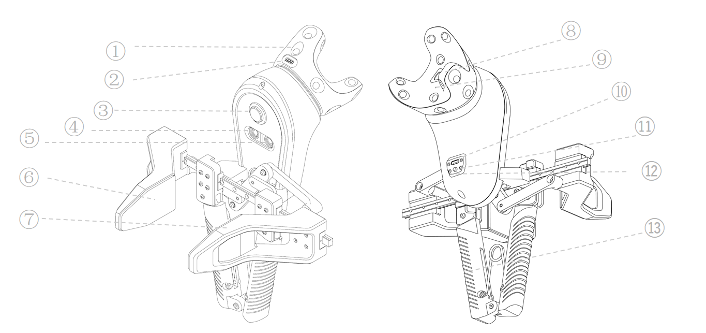
| 번호 | 이름 | 번호 | 이름 |
|---|---|---|---|
| 1 | 위치 태그 (Tracker) | 8 | 위치 태그 전원 버튼 |
| 2 | 위치 태그 충전구 | 9 | 위치 태그 표시등 |
| 3 | 초광각 카메라 | 10 | Type-C 포트 |
| 4 | 깊이 카메라 | 11 | 영점 버튼 |
| 5 | 깊이 카메라 | 12 | 상태 표시등 |
| 6 | 그리퍼 안쪽 패드 | 13 | 손잡이 |
| 7 | 두 손가락 그리퍼 |
- 대기 상태에서 그리퍼를 빠르게 두 번 쥐면 녹화가 켜지고, 다시 빠르게 두 번 쥐면 대기 상태로 돌아갑니다.
- 위쪽 위치 태그는 내장 배터리로 따로 동작하므로 정기적으로 충전하십시오. 다른 모듈은 Type-C 케이블로 전원을 받습니다.
영점 버튼 (11번, 뒤쪽 표시등 두 개 사이)
| 기능 | 조작 | 설명 |
|---|---|---|
| 그리퍼 영점 설정 | 두 번 누르기 | 그리퍼의 현재 위치를 영점으로 정합니다. |
영점은 출고 때 설정되어 있으므로 꼭 필요할 때만 조작하십시오. 조작할 때는 그리퍼를 완전히 닫은 상태에서 버튼을 누르십시오.
USB 무선 수신기 (데이터 시트)
위치 태그는 USB 무선 수신기로 수집 PC(주로 노트북이나 산업용 PC)와 무선 통신하므로, 위치 태그마다 무선 수신기와 짝지어 써야 합니다. 짝지은 수신기를 PC에 꽂고 위치 태그를 3초 동안 길게 눌러 켜십시오. 태그 표시등이 파란색에서 녹색으로 바뀌면 연결된 것입니다. 현재 ROS2 사용 설명서는 Tracker를 C-C 케이블로 Sense에 연결합니다 (7장).
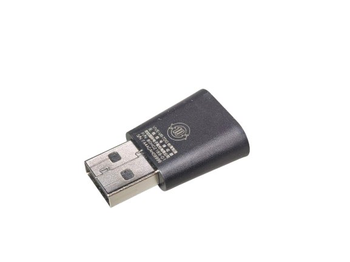
Pika Gripper (데이터 실행기)
Pika Gripper는 두 손가락 그리퍼 · 깊이 카메라 · 광각 카메라로 이루어집니다. 표준 고정 구조를 갖추었고, 여러 로봇팔(AgileX PiPER 6자유도 로봇팔이나 다른 회사 로봇팔)에 달 수 있도록 설치 플랜지를 선택할 수 있습니다 (플랜지는 따로 구매). 그리퍼 모터용 전원 포트 하나와 센서 통신용 Type-C 포트 하나가 있습니다.
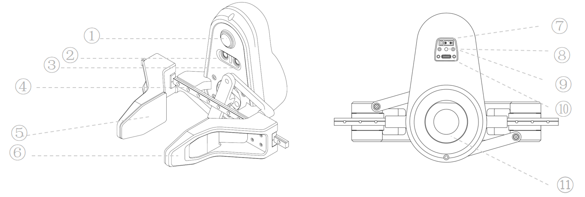
| 번호 | 이름 | 번호 | 이름 |
|---|---|---|---|
| 1 | 광각 카메라 | 7 | 전원 · 통신 포트 |
| 2 | 깊이 카메라 | 8 | 영점 버튼 |
| 3 | 깊이 카메라 | 9 | 상태 표시등 |
| 4 | 그리퍼 슬라이드 레일 | 10 | Type-C 데이터 통신 포트 |
| 5 | 그리퍼 안쪽 패드 | 11 | 플랜지 설치 위치 |
| 6 | 두 손가락 그리퍼 |
영점 버튼은 Pika Sense와 같습니다. 두 번 누르면 그리퍼의 현재 위치가 영점이 됩니다. 꼭 필요할 때만, 그리퍼를 완전히 닫은 상태에서 조작하십시오.
전원 · 통신 포트
전원 포트는 XT30(PB)입니다. 함께 있는 통신 핀(CAN)은 쓰지 않으며, 통신과 제어는 모두 Type-C로 합니다. USB 3.0 이상 케이블로 그리퍼에 연결하십시오.
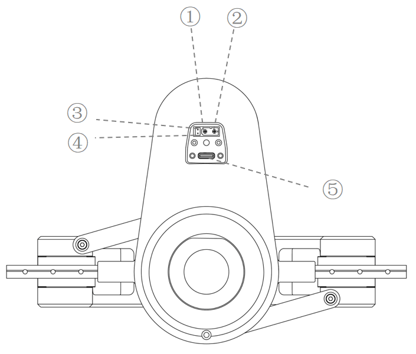
| 번호 | 정의 |
|---|---|
| 1 | 24 V 전원 − |
| 2 | 24 V 전원 + |
| 3 | CAN-L (예비) |
| 4 | CAN-H (예비) |
| 5 | Type-C |
Pika Station (위치 기지국)
고정밀 위치 기지국은 이동식 거치대와 전용 배터리를 갖추었으며, 공간 안에서 Pika 데이터 장치의 위치를 밀리미터 수준으로 알려 줍니다.
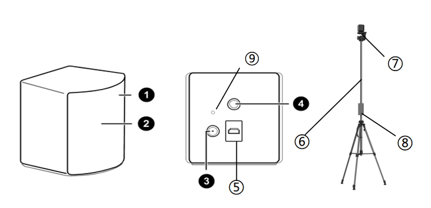
| 번호 | 이름 |
|---|---|
| 1 | 상태 표시등 |
| 2 | 앞면 패널 |
| 3 | 전원 포트 |
| 4 | 나사 설치 구멍 |
| 5 | Micro-USB 포트 |
| 6 | 기지국 삼각대 |
| 7 | 위치 기지국 |
| 8 | 배터리 (최신 배터리는 아래쪽 거치대에 설치) |
| 9 | 채널 설정 구멍 |
기지국 전원
- 방법 1: 기본 제공 HTC 전원 공급기(220 V 교류 입력)로 기지국에 바로 전원을 넣습니다.
- 방법 2: 기본 제공 배터리로 기지국에 전원을 넣습니다. 배터리와 기지국은 배터리-기지국 연결선으로 잇고, 배터리는 전용 충전기로 충전합니다.
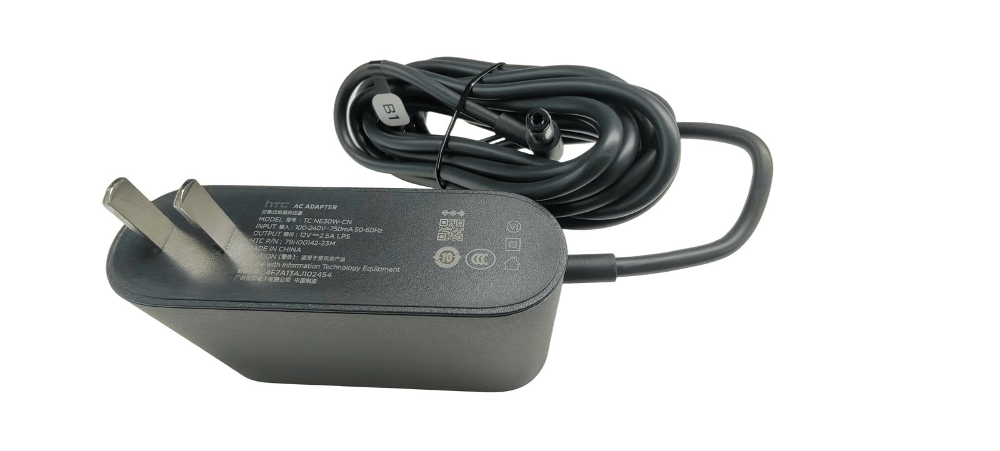
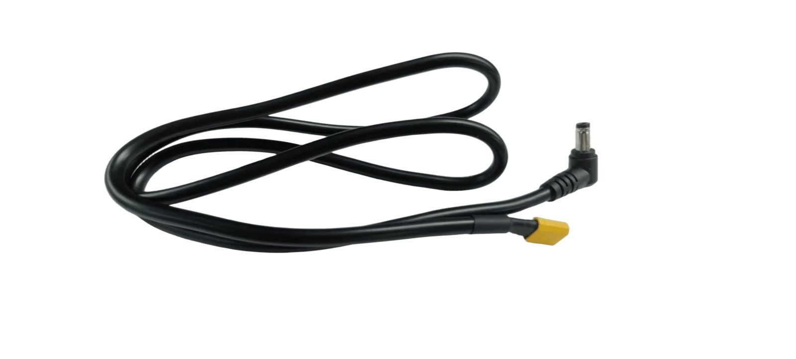
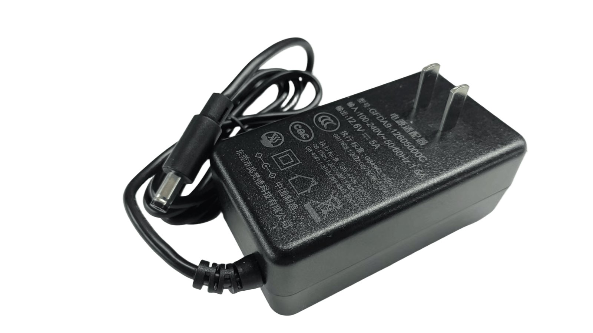
Pika Package (데이터 백팩, 선택)
Pika Package는 기본 구성에 들어 있지 않은 선택 부속품입니다. 구매는 영업 담당에게 문의하십시오.
Pika Package는 데이터 기록용 산업용 PC와 그 배터리, 고정 벨트로 이루어집니다. 내장 소프트웨어와 알고리즘으로 Pika Sense의 데이터를 수집 · 저장하고 내보내며, Pika Sense를 최대 두 대까지 동시에 쓸 수 있습니다.
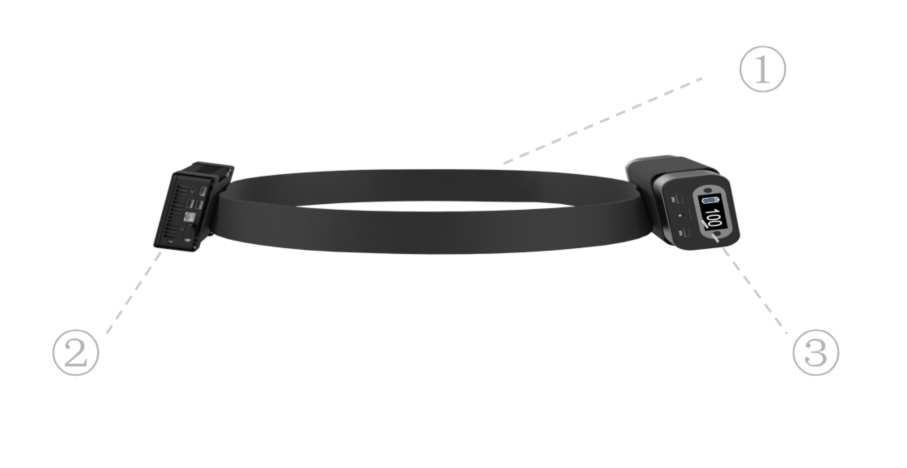
빠른 시작
소프트웨어 구성 → 하드웨어 준비 → 사용 흐름 선택 → 사용의 순서로 시작합니다. 문서
- 소프트웨어 구성6장의 소프트웨어 환경 구성을 마칩니다 (필수).
- 하드웨어 준비기지국을 설치하고 위치 교정을 마칩니다 (7장).
- 흐름 선택사용 방법에 맞는 8장의 절을 고릅니다.
- 사용수집 · 원격조작 · 추론 실행을 시작합니다.
기지국 교정에는 소프트웨어 환경이 필요하므로, 6장을 먼저 마친 뒤 7장의 위치 교정을 하십시오.
| 사용 방법 | 장치 구성 | 읽을 절 |
|---|---|---|
| 본체 없는 수집 (로봇팔 제어 없음) | Pika Sense 1 ~ 2대 (Ego 카메라 선택) | 8장 본체 없는 수집 |
| 로봇팔 원격조작 (그리퍼 · Gripper 없음) | Pika Sense 1 ~ 2대 (Ego 없음) + 로봇팔 | 8장 로봇팔 원격조작 |
| 로봇팔 원격조작 + 그리퍼 · Gripper | Pika Sense 1 ~ 2대 + 일반 그리퍼 · Pika Gripper (Ego 없음) | 8장 로봇팔 원격조작 · Pika Gripper |
| 그리퍼만으로 추론 실행 | Pika Gripper + 임의의 로봇팔 | 8장 Pika Gripper |
소프트웨어 환경 구성
반드시 거쳐야 하는 단계입니다. 환경은 Ubuntu 22.04 + ROS 2 Humble입니다. 문서
- ROS 2 Humble을 설치합니다.AgileX는 fishros의 원클릭 설치 스크립트를 권장합니다. 화면 안내에 따라 설치합니다.
cd ~ && wget http://fishros.com/install -O fishros && . fishros
- 코드를 받습니다.
git clone https://github.com/agilexrobotics/pika_ros.git cd pika_ros && git checkout ros2 git submodule update --init --recursive cd ~/pika_ros/src/PikaAnyArm/agx_arm git clone https://github.com/agilexrobotics/agx_arm_ros.git cd agx_arm_ros/src/agx_arm_description git clone -b flattened https://github.com/agilexrobotics/agx_arm_urdf.git
- 의존성을 설치합니다.
sudo apt-get update && sudo apt install libjsoncpp-dev libpcap-dev python3-pcl build-essential zlib1g-dev libx11-dev libusb-1.0-0-dev freeglut3-dev liblapacke-dev libopenblas-dev libatlas-base-dev cmake git libssl-dev pkg-config libgtk-3-dev libglfw3-dev libgl1-mesa-dev libglu1-mesa-dev g++ python3-pip libopenvr-dev ros-humble-diagnostic-updater cutecom sudo add-apt-repository ppa:ubuntu-toolchain-r/test -y && sudo apt update && sudo apt install -y gcc-13 g++-13 libstdc++6 libcurl4-openssl-dev git clone https://github.com/agilexrobotics/pyAgxArm.git cd pyAgxArm pip3 install . pip3 install "opencv-python<5" pip3 install "numpy<2"
pyAgxArm은 AgileX 로봇팔(PiPER · NERO 등)의 Python SDK로, 로봇팔 · 그리퍼의 Python 개발과 추론 실행에 씁니다. PikaAnyArm은 ROS2 원격조작 패키지로, 2단계에서 pika_ros의 서브모듈로 함께 받았습니다. 둘은 용도가 다릅니다. - USB 규칙을 설정합니다.
cd ~/pika_ros sudo cp scripts/81-vive.rules /etc/udev/rules.d/ sudo udevadm control --reload-rules && sudo udevadm trigger
이 단계를 마친 뒤 PC에 무선 수신기가 꽂혀 있으면 한 번 뺐다가 다시 꽂습니다. - RealSense SDK를 설치합니다.
pika_ros/source의librealsense-2.55.1.zip과curl-7.75.0.zip을 홈 디렉터리에 풉니다 (pika_ros 안의 폴더에 풀지 마십시오).librealsense-2.55.1/CMake/external_libcurl.cmake의/home/agilex/pika_ros/source/curl-7.75.0경로를 사용 중인 PC에 있는 curl-7.75.0의 실제 경로로 바꾼 뒤 빌드하고 설치합니다.cd librealsense-2.55.1 mkdir build && cd build && cmake .. && sudo make install
새 터미널에서realsense-viewer를 입력해 화면이 열리면 설치된 것입니다. - install 압축 파일을 풀고 권한을 줍니다.
source의install.zip을~/pika_ros에 풀고 실행 권한을 줍니다.chmod 777 -R install/
- 환경 변수를 추가합니다.
echo 'source ~/pika_ros/install/setup.bash' >> ~/.bashrc
- pika_ros를 빌드합니다.
~/pika_ros에서 실행합니다.colcon build
빌드가 끝나면pika_ros에img · install · README.md · scripts · source · build · log · src가 있습니다.
소프트웨어 환경 구성이 끝났습니다. 7장에서 하드웨어를 준비하십시오.
하드웨어 준비
위치 교정에는 6장의 소프트웨어 환경이 필요합니다. 6장을 먼저 마친 뒤 아래 순서로 준비합니다. 문서
- 안전과 환경을 확인합니다.2장의 안전 수칙을 읽고 이해했는지, 작업 환경이 안전하고 트였는지, 장치가 모두 갖춰져 있고 눈에 띄는 이상이 없는지, 배선이 제대로 연결되었는지 확인합니다.
- 소프트웨어 구성을 확인합니다.6장을 마쳤는지 확인합니다.
- 장치를 연결하고 충전 상태를 봅니다.Pika Sense의 Tracker를 양쪽 끝이 Type-C인 케이블(C-C)로 Sense 오른쪽 위의 Type-C 포트에 연결하고, Sense 본체는 데이터 케이블로 PC에 연결합니다.
Tracker 표시등이 흰색이나 녹색인지 확인합니다. 노란색 · 빨간색이거나 꺼져 있으면 휴대폰 충전기(5 V 3 A 이상)로 Tracker만 따로 충전하고, 표시등이 흰색이나 녹색으로 바뀐 뒤에 씁니다.
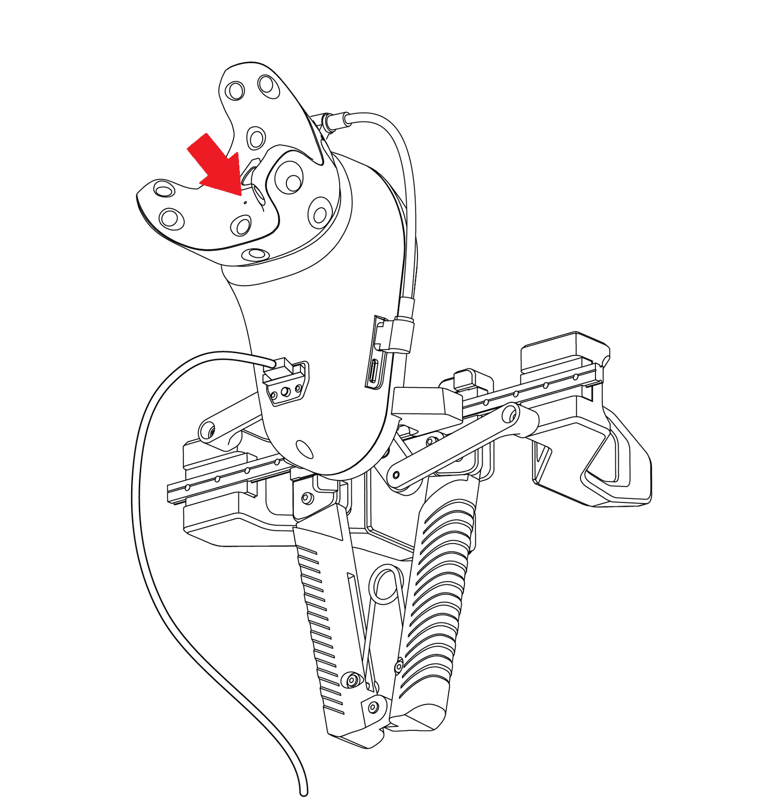
그림 15. Tracker를 Sense의 Type-C에 연결 (AgileX 문서) 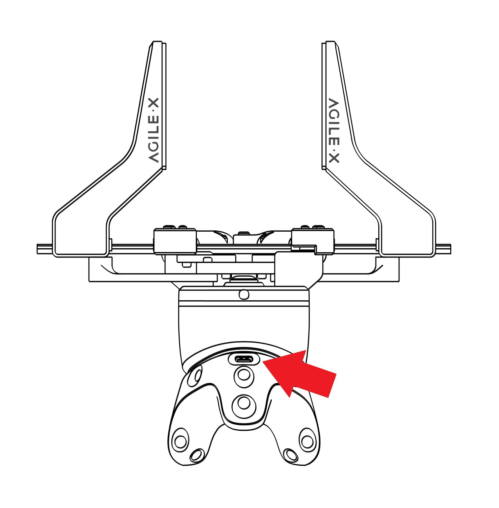
그림 16. Tracker 표시등 위치 (AgileX 문서) - 기지국을 설치하고 위치를 교정합니다.AgileX 문서 【ROS2】Pika 定位器与Sense使用说明及定位校准 (kb.agilex.ai/s/agx-pika-products-cn-en/p/ros2pika-sense-iNNLTg9WsD)에 따라 기지국을 설치하고 Tracker를 교정합니다. Pika Gripper를 단독으로 쓰는 경우(8장)를 빼고 모든 사용 방법에서 필수이며, 6장을 마친 뒤에 합니다.
사용 흐름
6장 소프트웨어 구성과 7장 하드웨어 준비를 마친 뒤 시작합니다 (Pika Gripper를 단독으로 쓸 때는 하드웨어 준비가 필요 없습니다). 각 단계의 자세한 절차는 표에 적은 AgileX 문서에 있습니다. 문서
본체 없는 수집 (Pika Sense · Ego 카메라)
Pika Sense와 Ego 카메라(선택)로 본체 없이 수집하려면, 7장의 위치 교정을 마쳤는지 확인한 뒤 아래 표의 순서대로 각 문서의 절차를 따르십시오. 설정하고 쓰는 동안에는 기지국 설치 환경을 좋게 유지하고, 작업 환경의 안전을 확보하십시오.
| 단계 | AgileX 문서 (kb.agilex.ai/s/agx-pika-products-cn-en/p/…) | 내용 |
|---|---|---|
| 1 | 【ROS2】Pika无本体采集启动流程 (ros2pika-OAVJkq461Z) | 본체 없는 수집의 시작 절차와 데이터 저장 형식을 설명합니다. Sense 한 대 · Ego 한 대 · Sense 두 대 · Sense 두 대 + Ego 구성을 다룹니다. 문서의 명령은 6장과 앞 문서의 설정, 기지국 교정을 마친 뒤 실행하십시오. |
| 2 | 【ROS2】采集数据处理流程 (ros2-IfpG8EcCko) | 수집이 끝난 뒤 데이터를 처리하는 절차입니다. |
로봇팔 원격조작
기지국을 설치한 곳에서 Pika Sense로 로봇팔을 원격조작하려면, 7장의 위치 교정을 마쳤는지 확인한 뒤 아래 표의 순서대로 각 문서의 절차를 따르십시오. 설정하고 쓰는 동안에는 기지국 설치 환경을 좋게 유지하고, 작업 환경의 안전을 확보하십시오.
| 단계 | AgileX 문서 | 내용 |
|---|---|---|
| 1 | 【ROS2】Pika 遥操作机械臂 (ros2pika-k1E2fXuuet) | Sense 한 대 · Sense 한 대 + Gripper 한 대 · Sense 두 대 · Sense 두 대 + Gripper 두 대로 로봇팔을 원격조작하는 방법을 다룹니다. |
| 2 | 【ROS2】Pika Gripper 使用说明 (ros2pika-gripper-NnKA7Kx6aE) | PiPER를 예로 들어 Gripper 설치 방법과, 모델 추론 때 그리퍼 데이터를 받고 그리퍼를 제어하는 방법을 설명합니다. Pika Gripper로 원격조작하지 않으면 이 단계를 건너뛰십시오. |
| 3 | 【ROS2】Pika遥操作采集启动流程 (ros2pika-ZeQGmkMIld) | AgileX 로봇팔을 원격조작하며 수집할 때의 시작 절차와 데이터 저장 형식을 설명합니다. 앞의 모든 원격조작 방식을 다룹니다. 문서의 명령은 소프트웨어 환경 구성과 앞 문서의 설정, 기지국 교정을 마친 뒤 실행하십시오. |
| 4 | 【ROS2】采集数据处理流程 (ros2-IfpG8EcCko) | 수집이 끝난 뒤 데이터를 처리하는 절차입니다. |
PiPER와 NERO 로봇팔 사용법은 AgileX PiPER 운용 설명서와 AgileX NERO 운용 설명서를 보십시오.
Pika Gripper
- Gripper는 Station · Sense 없이 단독 그리퍼로 쓸 수 있고, PiPER뿐 아니라 어떤 로봇팔에도 달아 쓸 수 있습니다.
- Sense로 수집한 데이터의 추론과, Sense로 하는 로봇팔 원격조작에 쓸 수 있습니다.
- 함께 있는 통신 핀(CAN)은 쓰지 않고, 통신과 제어는 모두 Type-C로 합니다. 통신 케이블은 반드시 USB 3.0 포트에 연결하십시오.
6장을 마친 뒤 시작하십시오. 원격조작에 쓰려면 7장(위치 교정 포함)도 마쳐야 합니다.
단독 그리퍼로 사용
| 단계 | AgileX 문서 | 내용 |
|---|---|---|
| 1 | 【ROS2】Pika Gripper 使用说明 (ros2pika-gripper-NnKA7Kx6aE) | PiPER를 예로 들어 Gripper 설치 방법과, 모델 추론 때 그리퍼 데이터를 받고 그리퍼를 제어하는 방법을 설명합니다. |
Pika Sense와 함께 임의의 로봇팔 원격조작
이 내용은 2차 개발 범위입니다. 기술 지원이 필요하면 AgileX 기술 지원 창구에 문의하십시오.
| 단계 | 자료 | 내용 |
|---|---|---|
| 1 | PikaAnyArm GitHub 저장소 (ros2 브랜치, pika_ros의 서브모듈) | 이 저장소의 코드로 Pika Gripper와 Pika Sense를 함께 써서 임의의 로봇팔을 원격조작합니다. |
| 2 | 【ROS2】Pika Gripper 使用说明 (ros2pika-gripper-NnKA7Kx6aE) | PiPER를 예로 들어 Gripper 설치 방법과, 모델 추론 때 그리퍼 데이터를 받고 그리퍼를 제어하는 방법을 설명합니다. |
유지 보수와 문제 해결
기지국 청소 방법과 자주 생기는 문제의 해결 방법을 설명합니다. 문서
기지국 청소
감전을 막으려면 기지국과 전원 어댑터를 언제나 마른 상태로, 액체에서 멀리 두십시오.
- 플러그를 뽑고 기지국을 떼어 냅니다.
- 물을 조금 묻힌, 거칠지 않은 부드러운 천으로 닦습니다.세제를 쓰지 마십시오. 앞면 패널을 긁지 말고, 어떤 부품도 분해하지 마십시오.
자주 생기는 문제
교정 중 driver_openvr.so를 찾지 못함
Error loading .../install/lib/plugins/driver_openvr.so: libopenvr_api.so.1: cannot open shared object file: No such file or directory
의존성을 설치한 뒤 다시 교정하십시오.
sudo apt install libopenvr-dev
교정 중 터미널이 멈추고 위치 오차가 나오지 않음
rm ~/.config/libsurvive/config.json
config.json을 지운 뒤 다시 교정하십시오.
교정 끝에 error failures가 나옴 · 사용 중 TF 좌표가 어긋남
error failures는 교정이 실패했다는 뜻입니다. 두 경우 모두 햇빛이 드는지, 적외선을 스스로 내는 장치가 있는지, Sense가 기지국 FOV 안에 들도록 기지국을 두었는지 확인한 뒤 다시 교정하십시오.
기지국이 위치를 잡지 못함
기지국을 둔 위치, 기지국 전원이 정상인지, Pika Sense와 Pika Station 사이에 가리는 것이 있는지, 적외선 간섭원이 있는지 확인하십시오.
어안 카메라 연결 끊김
Ubuntu에 기본으로 들어 있는 카메라 프로그램 Cheese로 어안 카메라 화면을 열어 보십시오. 그래도 영상이 나오지 않으면 기술 지원에 문의하십시오.
스테레오 카메라 연결 끊김
터미널에서 realsense-viewer를 실행해 카메라가 인식되는지 확인하십시오. 인식되지 않으면 기술 지원에 문의하십시오.
자세 정보를 TF로 읽어도 됩니까?
Pika가 한 대라면 /pika_pose 토픽을 구독해 자세 정보를 받을 수 있습니다.
Failed to Call service
이 오류만 따로 나온다면 조치할 필요가 없습니다. 수집 서비스가 켜져 있지 않아서 나오는 오류입니다.
Permission denied
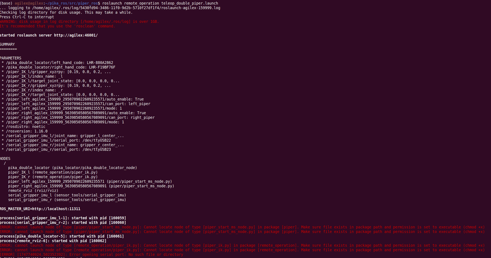
install 디렉터리에 권한을 주지 않아서 생기는 오류입니다. 아래 명령으로 권한을 주십시오.
chmod 777 -R install/
casadi 가져오기 오류
conda 환경에서 PikaAnyArm 원격조작을 실행할 때 자주 생기는 오류입니다 (그림의 경로는 예시입니다).
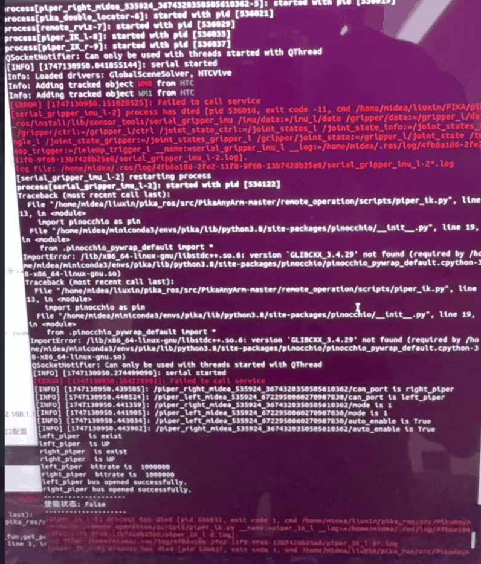
원인: 프로그램이 conda 환경에 설치된, casadi와 호환되는 새 C++ 표준 라이브러리 대신 시스템에 기본으로 들어 있는 오래된 라이브러리에 잘못 링크되었습니다.
해결: LD_PRELOAD를 설정해 동적 링커가 conda 환경의 라이브러리를 먼저 불러오게 하십시오. 경로는 실제 conda 환경에 맞게 고치십시오.
export LD_PRELOAD=/home/<user name>/miniconda3/envs/Pika/lib/libstdc++.so.6
치수 도면 · 권장 구성 · 상태 표시등 · 자료 목록
AgileX 사용 설명서의 부록과 자료 목록입니다. 도면 단위는 mm입니다. 문서
A. 치수 도면
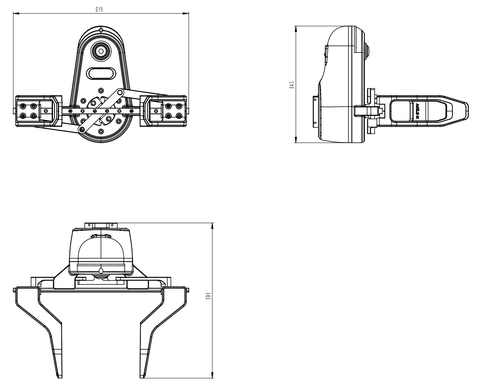
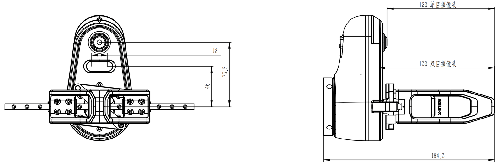
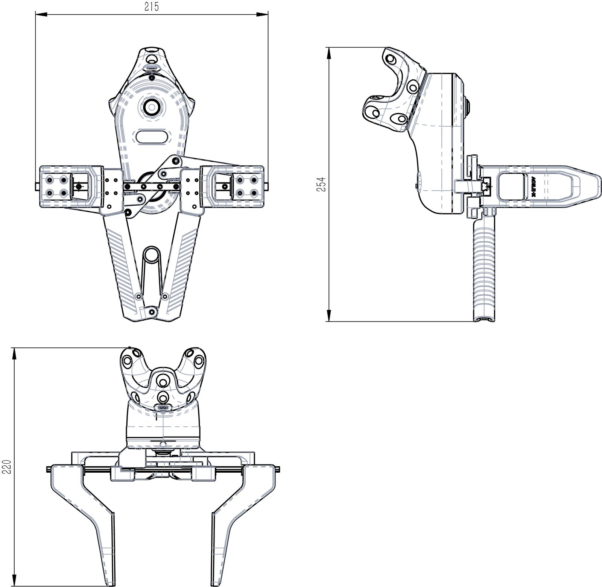
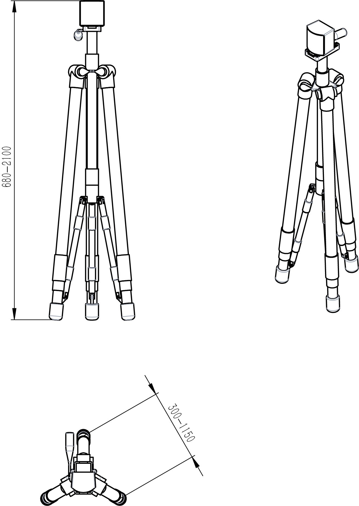
B. 권장 구성
| 구성 | 장치 | 쓰는 곳 |
|---|---|---|
| 구성 1 (권장) | Pika Station × 2 · Pika Sense × 1 · Pika Gripper × 1 · PiPER × 1 | 한 팔 Pick & Place와 조작. Sense 한 대로 수집한 뒤 실행기를 로봇팔에 달아 추론. 작업 공간 약 6 × 6 m |
| 구성 2 (일반) | Pika Station × 2 · Pika Sense × 2 · Pika Gripper × 2 · PiPER × 2 | 양팔 Pick & Place 같은 복잡한 조작. Sense 두 대로 동시에 수집한 뒤 실행기를 로봇팔에 달아 추론. 작업 공간 약 5 × 5 m |
| 구성 3 (넓은 공간) | Pika Station × 4 · Pika Sense × 2 · Pika Gripper × 2 · PiPER × 2 | 구성 2와 같은 양팔 작업을 넓은 공간에서. 작업 공간 약 10 × 10 m |
C. 상태 표시등
| 장치 | 색 | 상태 | 뜻 |
|---|---|---|---|
| Pika Gripper | 녹색 | 깜박임 | 전원 투입 후 자가 점검 중 |
| 녹색 | 켜짐 | 자가 점검 통과, 대기 (그리퍼 Disable) | |
| 파란색 | 켜짐 | 작동 상태 (그리퍼 Enable) | |
| 빨간색 | 켜짐 | 그리퍼 모터 고장 경고 (고장 검출 데이터 프레임으로 판정) | |
| Pika Sense | 흰색 | 켜짐 | 기본 전원 투입 상태 |
| 노란색 | 켜짐 | 원격조작 실패나 수집 프레임 누락 같은 이상 | |
| 녹색 | 켜짐 | 원격조작 · 수집 정상 | |
| 파란색 | 켜짐 | 두 번 쥐기 · 명령 전환 감지 | |
| 빨간색 | 켜짐 · 깜박임 | 위치 데이터 손실 | |
| Tracker | 흰색 | 켜짐 | 완전 충전 (전원 꺼짐) |
| 녹색 | 켜짐 | 완전 충전 (전원 켜짐), 정상 | |
| 노란색 | 켜짐 | 충전 중 | |
| 빨간색 | 켜짐 · 깜박임 | 배터리 부족. 충전기로 Tracker만 따로, 표시등이 흰색 · 녹색이 될 때까지 충전 | |
| Pika Station | 녹색 | 켜짐 | 정상 |
| 파란색 | 켜짐 | 안정화 대기. 계속되면 단단히 설치되었는지, 진동이 적은 면에 두었는지 확인 |
D. AgileX 자료 목록
AgileX가 PIKA 사용자에게 안내하는 공식 자료입니다 (【对外】PIKA产品使用资料清单-202507, 2026-09-18 판).
| 자료 | 주소 · 내용 |
|---|---|
| 제품 페이지 | www.agilex.ai (Pika Pro · UMI와 Ego 데이터 수집 솔루션) |
| 개봉 영상 | bilibili BV1kTgn6sEHe (영상의 백팩과 Ego는 선택 부속품) |
| 사용 설명서 ROS2 | Pika 用户手册: agilexsupport.yuque.com/staff-hso6mo/peoot3/zozsdvvgvgha4zgd (이 책의 근거) · 대외판: …/peoot3/vm7e26ho2hmuw0ng |
| Pika Package 사용 설명서 | agilexsupport.yuque.com/staff-hso6mo/peoot3/awqtm00vsb829b3z (선택 부속품 데이터 백팩) |
| 구조 모델 파일 | agilexsupport.yuque.com/staff-hso6mo/peoot3/cg50c6d2fn27aimk (Pika Gripper · Pika Sense) |
| Python SDK | github.com/agilexrobotics/pika_sdk (LGPL-3.0) |
| ROS 드라이버 | github.com/agilexrobotics/pika_ros (BSD-3-Clause) |
| 원격조작 코드 | github.com/agilexrobotics/PikaAnyArm (BSD-3-Clause) · 임의 로봇팔 원격조작 방법: agilexsupport.yuque.com/staff-hso6mo/qdr95l/aaypydzgtmog2gsz |
| 자주 묻는 질문 | agilexsupport.yuque.com/staff-hso6mo/peoot3/ltl2m8a3crra12kg |
| 예제 데이터셋 | huggingface.co/datasets/AgileXRobotics/pika_sample_data |
| 시연 영상 | bilibili BV1cGrYYuEv9 (전체) · BV1Pew3eTEZD (데이터 수집) · BV14oc9etErC (Gripper 추론) · BV13zRgYbEfF (한 팔 원격조작) · BV13G9dYDEua (여러 팔 원격조작) |